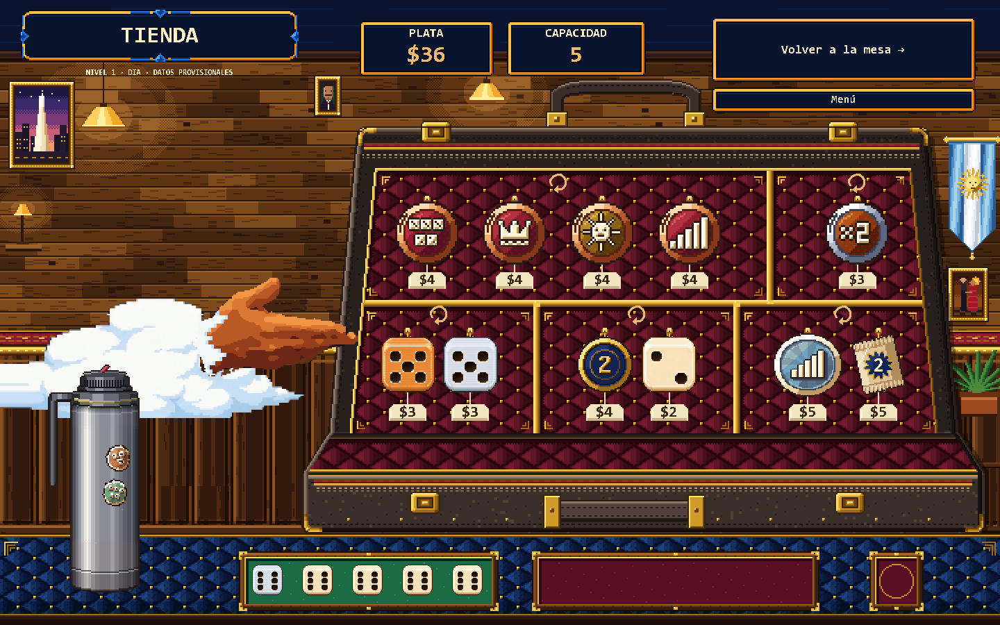
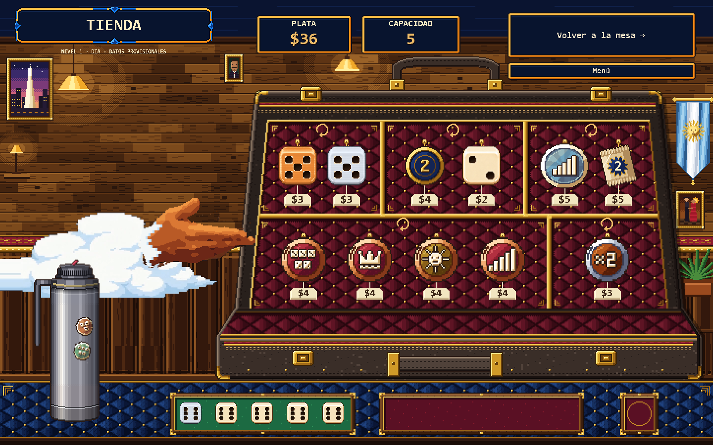
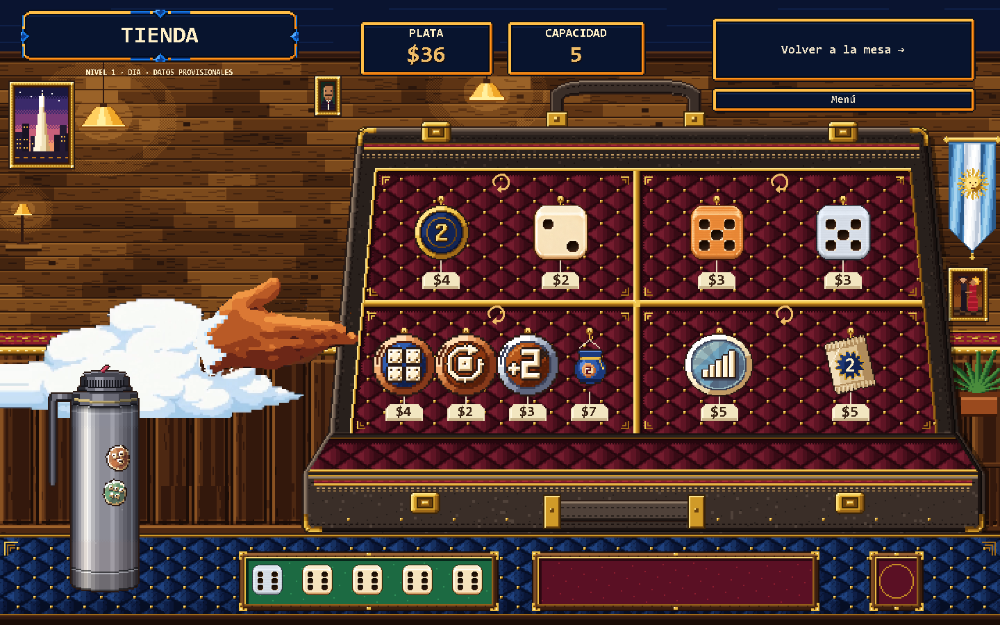

<title>Tienda con más monedas</title>
<meta name="claude:viewport-fit-sides" content="cover">
<link rel="stylesheet" href="https://fonts.googleapis.com/css2?family=Silkscreen&family=IBM+Plex+Sans:wght@400;600&display=swap">
<style>
/* Layout: una columna; la propuesta grande arriba, la tienda de hoy abajo para comparar, y la lectura del boceto al lado. */
:root {
  --bg: #f4ece4;
  --panel: #fffaf3;
  --ink: #2a1418;
  --muted: #6e5a52;
  --gold: #9a6b10;
  --velvet: #5a0f22;
  --line: #e0d0c2;
  --display: "Silkscreen", "Consolas", monospace;
  --body: "IBM Plex Sans", "Segoe UI", system-ui, sans-serif;
}
@media (prefers-color-scheme: dark) {
  :root:not([data-theme="light"]) { --bg: #160b0e; --panel: #23131a; --ink: #f6e8d8; --muted: #b9a291; --gold: #f0c850; --velvet: #e88aa0; --line: #3c2630; color-scheme: dark; }
}
:root[data-theme="dark"] { --bg: #160b0e; --panel: #23131a; --ink: #f6e8d8; --muted: #b9a291; --gold: #f0c850; --velvet: #e88aa0; --line: #3c2630; color-scheme: dark; }
body { background: var(--bg); color: var(--ink); font-family: var(--body); font-size: 16px; line-height: 1.55; }
main { max-width: 1180px; margin: 0 auto; padding-block: 32px 56px; padding-left: max(16px, env(safe-area-inset-left, 0px)); padding-right: max(16px, env(safe-area-inset-right, 0px)); display: grid; gap: 28px; }
h1 { font-family: var(--display); font-weight: 400; font-size: clamp(1.6rem, 4vw, 2.4rem); color: var(--gold); margin: 0; text-wrap: balance; letter-spacing: 0.02em; }
h2 { font-family: var(--display); font-weight: 400; font-size: 1.05rem; letter-spacing: 0.06em; text-transform: uppercase; margin: 0; color: var(--gold); }
p { margin: 0; max-width: 68ch; }
.lead { color: var(--muted); }
figure { margin: 0; display: grid; gap: 10px; }
figure img { width: 100%; height: auto; image-rendering: pixelated; border: 2px solid var(--line); display: block; }
figcaption { color: var(--muted); font-size: 0.92rem; }
.split { display: grid; grid-template-columns: minmax(0, 1fr) minmax(0, 1fr); gap: 24px; align-items: start; }
.sections { display: grid; gap: 8px; margin: 0; padding: 0; list-style: none; }
.sections li { display: grid; grid-template-columns: 9.5rem minmax(0, 1fr); gap: 12px; padding: 10px 14px; background: var(--panel); border: 1px solid var(--line); }
.sections b { font-family: var(--display); font-weight: 400; color: var(--velvet); font-size: 0.85rem; letter-spacing: 0.04em; }
.notes { display: grid; gap: 10px; padding: 0; margin: 0; list-style: none; }
.notes li { padding-left: 14px; border-left: 3px solid var(--gold); }
@media (max-width: 760px) { .split { grid-template-columns: minmax(0, 1fr); } .sections li { grid-template-columns: minmax(0, 1fr); gap: 2px; } }
</style>
<main>
  <header style="display:grid;gap:10px">
    <h1>Tienda con más monedas</h1>
    <p class="lead">Reinterpretación de tu dibujo sobre el maletín real: las divisiones se movieron siguiendo el acolchado (se repite cada 24 × 16 píxeles de arte), así que empalman sin costuras. Las monedas, dados, stickers, etiquetas y ganchos son los del juego.</p>
  </header>

  <figure>
    
    <figcaption>Opción A, monedas arriba. 11 objetos en el maletín (hoy son 10) y 5 monedas en lugar de 4.</figcaption>
  </figure>

  <figure>
    
    <figcaption>Opción B, filas invertidas: arriba componentes, números y stickers; abajo las 4 monedas y la de un uso. Los mismos 11 objetos.</figcaption>
  </figure>

  <div class="split">
    <section style="display:grid;gap:12px">
      <h2>Cómo leí el boceto (opción A)</h2>
      <ul class="sections">
        <li><b>Monedas</b><span>Arriba a la izquierda, la sección ancha: 4 monedas pasivas para elegir.</span></li>
        <li><b>Un uso</b><span>Arriba a la derecha, angosta: 1 moneda de un uso.</span></li>
        <li><b>Componentes</b><span>Abajo a la izquierda: 2 modificadores (elemento, material o gema).</span></li>
        <li><b>Números</b><span>Abajo al medio: 2 mejoradores (+número o cambio de cara).</span></li>
        <li><b>Stickers</b><span>Abajo a la derecha: 2 objetos, stickers o paquetes.</span></li>
      </ul>
    </section>
    <section style="display:grid;gap:12px">
      <h2>Para decidir</h2>
      <ul class="notes">
        <li>En tu dibujo la sección del medio de abajo era más angosta y tenía un borde verde. La hice del mismo ancho que las otras dos. ¿El verde marcaba algo especial?</li>
        <li>Cada sección tiene su botón de renovar arriba, como hoy. La de un uso también; se puede sacar si preferís que no se renueve sola.</li>
        <li>La moneda de un uso queda separada de las pasivas: hoy salen mezcladas en las cuatro de Monedas.</li>
        <li>Es solo el boceto: no cambia el juego ni el arte hasta que lo apruebes.</li>
      </ul>
    </section>
  </div>

  <figure>
    
    <figcaption>Hoy, para comparar: cuatro secciones iguales (números 2, componentes 2, monedas 4, stickers 2).</figcaption>
  </figure>
</main>
